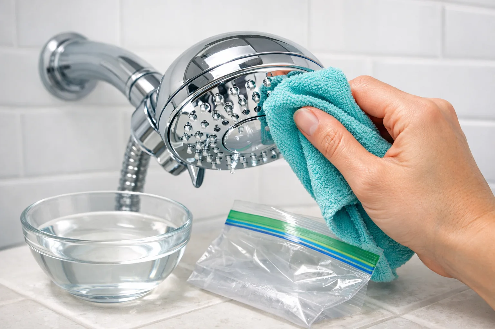

How to Clean a Shower Head: 5 Easy Methods That Work (2026)

Bathroom Fixtures Expert
Practical bathroom maintenance guides based on real-world testing.
Quick Answer: How to Clean a Shower Head
The fastest method: Fill a plastic bag with white vinegar, secure it around the shower head with a rubber band so the nozzles are fully submerged, and leave it overnight. In the morning, remove the bag, scrub any remaining deposits with an old toothbrush, and run hot water for one minute. This removes 90% of mineral buildup with almost zero effort. For severe clogs, use the vinegar + baking soda combo or a commercial CLR product.

You step into the shower expecting a strong, even spray — and instead get a sputtering, uneven dribble that shoots water sideways. Sound familiar? A clogged shower head is one of the most common (and most annoying) bathroom problems, and it happens to every household regardless of how clean the bathroom is.
The culprit is almost always mineral buildup. Hard water deposits — primarily calcium and lime — slowly accumulate inside the nozzle holes, restricting water flow and distorting the spray pattern. Over time, this buildup reduces water pressure, wastes water (yes, a clogged head actually increases your bill), and can even harbor bacteria.
The good news: cleaning a shower head is one of the easiest home maintenance tasks you can do. Most methods require supplies you already have in your kitchen, take less than 10 minutes of active effort, and produce dramatic results overnight. Whether you have a large rainfall shower head, a handheld model, or a standard fixed head, these five methods will restore your shower to full power.
In this guide, we cover five proven cleaning methods from gentlest to most aggressive, explain when to use each one, and share the maintenance routine that prevents buildup from returning. If your shower head is beyond saving, we also help you decide when it's time for a replacement.
Signs Your Shower Head Needs Cleaning
Not sure if your shower head actually needs cleaning? Here are the telltale signs that mineral deposits are affecting performance:
- Reduced water pressure: The flow feels noticeably weaker than when the shower head was new, even though your home's water pressure hasn't changed.
- Uneven spray pattern: Some nozzles spray normally while others are blocked or shoot water at odd angles. This is the most visible sign of partial clogging.
- Visible white or green deposits: Chalky white spots (calcium) or greenish buildup (copper oxidation) around the nozzle openings.
- Water spraying sideways: Individual jets that shoot to the side instead of straight out indicate a partially blocked nozzle.
- Dripping after the water is turned off: Mineral buildup inside the head can prevent water from draining properly, causing prolonged dripping.
- Whistling or squealing sounds: When water forces through narrowed passages, it can create high-pitched noises.
Pro Tip: If you have hard water (most US households do), plan on cleaning your shower head at least once a month. If you have a filtered shower head, the filter handles some mineral content, but the nozzle plate still needs regular cleaning.
If you notice any combination of these signs, pick one of the five methods below based on how severe the buildup is. For light deposits, start with Method 1. For heavy, crusty buildup that has been accumulating for months, skip straight to Method 3 or Method 5.
What You'll Need (Supplies Checklist)
Before starting any cleaning method, gather your supplies. Chances are you already have most of these at home. Here is the master list across all five methods:
Essential Supplies
- White distilled vinegar (at least 2 cups — buy the large jug)
- Baking soda (1/3 cup for Method 2)
- A plastic bag large enough to cover your shower head (gallon-size zip-lock works)
- Rubber bands, zip ties, or twist ties
- Old toothbrush (a stiff-bristled one works best)
- Toothpicks, safety pins, or paper clips (for individual nozzle clearing)
- Clean cloth or microfiber towel
For Advanced Cleaning (Methods 3 & 5)
- CLR (Calcium Lime Rust) remover or similar commercial descaler
- Adjustable wrench or pliers (with a cloth to protect the finish)
- Teflon tape (plumber's tape) for reassembly
- Bowl or bucket large enough to submerge the shower head
- Rubber gloves (recommended for CLR)
Total cost for all supplies: under $10 if you need to buy everything. White vinegar is the workhorse ingredient — a gallon costs about $3 and will last you multiple cleanings.
Method 1: White Vinegar Soak (Overnight Bag Method)
The Vinegar Bag Soak
This is the go-to method recommended by plumbers and cleaning experts alike. It works on every type of shower head — fixed, handheld, and rainfall — without any disassembly. The acetic acid in white vinegar dissolves calcium carbonate deposits naturally.
Fill a plastic bag (gallon zip-lock or grocery bag) with enough white distilled vinegar to fully submerge the shower head's face plate. You'll need about 1 to 2 cups depending on the size of your shower head. For large rainfall heads (8 inches or wider), you may need a larger bag and more vinegar.
Hold the bag up so the shower head nozzles are completely submerged in the vinegar. Secure the bag tightly around the shower arm or handle using a rubber band, zip tie, or twist tie. Make sure the bag won't slip — you want the nozzles soaking the entire time. Double up on rubber bands if needed.
Leave the bag in place for at least 6 hours. Overnight is perfect — set it up before bed and deal with it in the morning. For light buildup, 4 hours may be sufficient. For heavy deposits, you can leave it up to 12 hours, but avoid going longer than that on brass, gold, or oil-rubbed bronze finishes, as the acid can affect the coating.
Carefully remove the bag (the vinegar can splash). Use an old toothbrush to gently scrub the nozzle face, loosening any remaining deposits. The mineral buildup should be soft and easy to remove after soaking. Pay attention to the edges where the faceplate meets the body — deposits accumulate there.
Turn on the shower and run hot water at full pressure for 60 seconds. This flushes out dissolved minerals from inside the head and any loosened particles from the nozzles. You should immediately notice improved flow and a more even spray pattern.
Why white vinegar works: White distilled vinegar is about 5% acetic acid. This acid reacts with calcium carbonate (the primary component of hard water deposits) to produce water, carbon dioxide, and calcium acetate — all of which rinse away harmlessly. It's the same chemical reaction used by professional plumbers, just slower and gentler than commercial descalers.
Method 2: Vinegar + Baking Soda Deep Clean
The Fizzing Combo
When you need results faster than the overnight soak, the vinegar and baking soda combo delivers. The fizzing reaction provides mechanical scrubbing action on top of the chemical dissolving, making it more effective on moderate deposits in a fraction of the time.
In a bowl, combine 1 cup of white vinegar with 1/3 cup of baking soda. It will fizz vigorously — this is normal and expected. Wait for the initial fizzing to die down (about 30 seconds) before proceeding. The resulting solution is mildly acidic and slightly abrasive from the dissolved baking soda.
For a fixed shower head, dip an old toothbrush into the mixture and apply it generously to the nozzle face, working it into each hole. Alternatively, use the bag method from Method 1 with this solution instead of plain vinegar. For a handheld shower head, you can dip the face directly into the bowl.
Let the fizzing solution work on the deposits for 30 minutes. If using the bag method, the liquid stays in contact with the nozzles automatically. If you applied it with a brush, reapply every 10 minutes to keep the surface wet with the solution.
After 30 minutes, scrub the entire nozzle face with the toothbrush. The combination of acid soaking and the mildly abrasive baking soda residue makes scrubbing significantly more effective. Work in circular motions around each nozzle. For stubborn spots, dip the brush in fresh baking soda for extra abrasion.
Rinse the shower head thoroughly under running water, then turn on the shower and run hot water for 60 seconds. Check the spray pattern — all nozzles should be spraying evenly. If some are still partially blocked, use Method 4 (toothpick) on those specific nozzles.
When to choose this over Method 1: Use the vinegar + baking soda method when you need the shower usable within an hour (guests coming, morning routine, etc.) or when the overnight soak didn't fully resolve moderate buildup. The mechanical fizzing action reaches deposits that passive soaking alone can miss.
Method 3: CLR / Commercial Cleaner Method
Commercial Descaler Treatment
When vinegar alone can't handle months or years of neglected mineral buildup, commercial calcium and lime removers like CLR (Calcium Lime Rust), Lime-A-Way, or Bar Keeper's Friend are the heavy artillery. These products contain stronger acids that dissolve deposits much faster than household vinegar.
Safety First: Always wear rubber gloves when handling CLR or similar commercial cleaners. Work in a well-ventilated area (open a bathroom window or turn on the exhaust fan). Never mix CLR with bleach or any other cleaning product — this can produce toxic fumes. Follow the product's instructions exactly.
Before applying any commercial cleaner, check the label for compatibility with your shower head's finish. CLR is safe for most chrome, stainless steel, and plastic surfaces but can damage natural stone, marble, brass, and some colored finishes. When in doubt, test on an inconspicuous spot first.
For CLR specifically: mix equal parts CLR and warm water. Apply to the shower head face using a sponge, cloth, or the bag method. For spray-on products like Lime-A-Way, spray directly onto the nozzle face until thoroughly coated. Ensure all nozzle openings are in contact with the solution.
Commercial cleaners work fast — typically 2 to 5 minutes is sufficient. Do not leave CLR on for more than the recommended time, as it can damage finishes and corrode metal components. Set a timer. This is not a "more time equals better results" situation.
Scrub with a toothbrush, then rinse the shower head extensively with clean water. Run the shower at full pressure for 2 minutes to flush all chemical residue from the internal passages. You do not want to shower in CLR residue. Rinse until there is no chemical smell remaining.
Commercial cleaners are the fastest option and handle the worst cases, but they are harsher on finishes and require more caution. For routine monthly maintenance, stick with vinegar (Method 1 or 2). Reserve CLR for the heavy jobs — the quarterly deep clean or when you move into a new home and inherit a neglected shower head.
Method 4: Toothbrush + Toothpick Scrub for Stubborn Deposits
Manual Nozzle Clearing
Sometimes a soak gets 90% of the nozzles clean, but a few stubborn ones remain blocked. This hands-on method targets individual nozzle holes using pointed tools. It is best used as a follow-up to Methods 1-3, not as a standalone solution for a fully clogged head.
Turn on the shower and observe the spray pattern. Note which nozzles are completely blocked (no water) or partially blocked (spraying sideways or weakly). You can mark them with a washable marker if there are many. Turn the water off before proceeding.
Insert a toothpick, safety pin, or straightened paper clip into each blocked nozzle hole. Gently push through the mineral deposit to break it up. Rotate the pick as you push to loosen the clog. Be careful not to scratch the nozzle surface — a wooden toothpick is gentler than a metal pin.
Many modern shower heads — especially high-pressure models — use flexible silicone nozzles (often called "easy-clean" or "anti-clog" nozzles). For these, simply rub your finger firmly across each nozzle tip. The silicone flexes and dislodges mineral deposits without tools. This is one reason we recommend shower heads with silicone nozzles in our best shower heads roundup.
Use an old toothbrush (preferably stiff-bristled) to scrub the entire nozzle plate in circular motions. Pay extra attention to the edges and seams where the faceplate connects to the shower head body. Dip the brush in vinegar periodically for added cleaning power.
Turn on the shower and run hot water for 60 seconds to flush loosened debris. Check the spray pattern again. All nozzles should now produce an even, straight spray. Repeat on any remaining stubborn nozzles. If individual nozzles still won't clear, the clog may be deep inside — move to Method 5 (detach and soak).
Method 5: Detach and Soak (For Removable Shower Heads)
Full Disassembly Soak
This is the nuclear option — and the most thorough method. By removing the shower head entirely and soaking it in a bowl, you can dissolve deposits from the inside out, clean internal filter screens, and restore the head to near-new condition. This method is especially effective for handheld shower heads, which are designed for easy removal.
Unscrew the shower head from the shower arm by turning it counterclockwise. Most hand-tighten and can be removed without tools. If it's stuck, wrap a cloth around the connection point and use an adjustable wrench for grip — the cloth prevents scratching the finish. For handheld models, disconnect from the hose.
Many shower heads have removable faceplates, flow restrictors, or internal filter screens. Check your model's manual or look for twist-off components. Removing these parts lets the vinegar reach all internal surfaces. Keep track of the order and orientation of all parts for reassembly. Take a photo with your phone before disassembling if needed.
Place all parts in a bowl or bucket filled with white vinegar. Ensure everything is fully submerged. For severe buildup, add 2 tablespoons of baking soda to the vinegar. Soak for a minimum of 4 hours — 8 hours or overnight is ideal. The extended contact time dissolves deposits that the bag method can't reach because the vinegar gets inside every passage and chamber.
After soaking, scrub each part individually with an old toothbrush. Clean inside the shower head body with a bottle brush or pipe cleaner. Clear individual nozzle holes with a toothpick. Clean the filter screen (the small mesh disc at the connection point) — this is often the biggest hidden source of restricted flow.
Rinse all parts thoroughly with clean water. Reassemble the shower head in the correct order. Before reattaching, clean the threads on the shower arm and apply 3-4 wraps of fresh Teflon tape clockwise. Screw the shower head back on hand-tight, then turn it an additional quarter turn with a cloth-wrapped wrench. Run the shower for 2 minutes to flush everything clean.
Don't forget the shower arm: While the shower head is off, look inside the shower arm pipe. You'll often see mineral buildup inside the arm itself. Run water through it to flush debris, or push a cloth through it with a coat hanger. This internal buildup can restrict flow just as much as a clogged shower head.
Cleaning Methods Comparison
Not sure which method to choose? This table compares all five methods side by side to help you pick the right approach based on your situation:
| Method | Time | Effort | Cost | Best For |
|---|---|---|---|---|
| 1. Vinegar Soak | 6-8 hrs | Minimal | ~$1 | Light-moderate buildup, routine maintenance |
| 2. Vinegar + Baking Soda | 30-45 min | Low | ~$1 | Moderate buildup, faster results needed |
| 3. CLR / Commercial | 15-30 min | Low | $5-8 | Severe buildup, hard water areas |
| 4. Toothbrush + Toothpick | 15-20 min | Medium | $0 | Spot treatment, individual nozzles |
| 5. Detach and Soak | 4-8 hrs | Medium | ~$2 | Full restoration, internal deposits |
Our recommendation: For most people, a monthly Method 1 (overnight vinegar soak) combined with a quick Method 4 (toothbrush scrub) afterwards keeps shower heads performing at peak efficiency. Do a full Method 5 (detach and soak) every 3-6 months, or whenever you notice the monthly soak isn't quite cutting it anymore.
Cleaning Tips by Shower Head Type
Different shower head types and finishes require slightly different cleaning approaches. Here is what to keep in mind for each:
Chrome and Stainless Steel
The most forgiving finishes. All five methods work safely. Chrome handles vinegar soaks of 12+ hours without issue, and CLR won't damage the finish when used as directed. This is the easiest finish to maintain, which is one reason chrome remains the most popular option in our shower head reviews.
Brushed Nickel
Vinegar is safe for brushed nickel, but limit soaking to 8 hours maximum. Avoid abrasive scrubbing that could alter the brushed texture. Use a soft-bristled toothbrush rather than a stiff one. CLR is generally safe but test on a hidden area first — some brushed nickel coatings are more delicate than others.
Oil-Rubbed Bronze
This is the most delicate common finish. Limit vinegar soaks to 2-4 hours maximum, and dilute the vinegar 1:1 with water. Do not use CLR or abrasive cleaners on oil-rubbed bronze — they can strip the patina. Use the toothbrush method (Method 4) as your primary cleaning approach, with short diluted vinegar soaks for stubborn deposits.
Rainfall Shower Heads (Large Face Plates)
Rainfall shower heads with 8-12 inch face plates require more vinegar and a larger bag for the soak method. A gallon zip-lock bag usually isn't big enough — use a small garbage bag instead. Alternatively, Method 5 (detach and soak) is particularly effective for rainfall heads since you can submerge the entire oversized face plate in a bowl. The large number of nozzles (often 100+) means more potential clog points, so clean these heads more frequently.
Handheld Shower Heads
Handheld models are the easiest to clean because they're designed for quick removal. Simply unscrew from the hose, drop in a bowl of vinegar, and proceed with Method 5. No bag, no rubber bands, no awkward overhead reaching. This built-in convenience is one advantage of handheld systems highlighted in our handheld vs. fixed comparison.
Filtered Shower Heads
If you use a filtered shower head, always remove the filter cartridge before any cleaning method. Vinegar and CLR will destroy the filter media. Clean only the housing and nozzle plate, then reinstall the filter afterwards. If your filtered shower head still has weak pressure after cleaning the nozzles, the filter cartridge itself may be clogged and need replacement (typically every 6 months).
How to Prevent Mineral Buildup
Cleaning a shower head is straightforward, but preventing buildup from forming in the first place saves you even more time. Here are proven strategies to keep your shower head flowing freely between deep cleans:
1. Wipe Down After Each Use
Take 10 seconds after your shower to wipe the nozzle face with a towel. This removes water droplets before they can evaporate and leave mineral deposits behind. It sounds tedious, but it's the single most effective prevention method. Hotels do this daily — it's why hotel shower heads always seem to work perfectly.
2. Monthly Vinegar Maintenance
Even if your shower head seems fine, do a quick 2-hour vinegar bag soak once a month. This dissolves early-stage deposits before they harden and become difficult to remove. Think of it as brushing your teeth for your shower head — small consistent effort prevents big problems.
3. Install a Water Softener
If you have very hard water (over 120 mg/L or 7 grains per gallon), a whole-house water softener eliminates the problem at the source. Water softeners replace calcium and magnesium ions with sodium ions, preventing mineral buildup in all your plumbing fixtures, appliances, and water heaters. The upfront cost ($500-2000 installed) pays for itself in reduced maintenance and longer appliance life.
4. Use a Filtered Shower Head
A filtered shower head won't eliminate hard water minerals entirely (you need a water softener for that), but it will reduce sediment, chlorine, and some dissolved minerals. This slows buildup significantly. Our filtered vs. regular shower head comparison breaks down what filters actually remove and which ones are worth the investment.
5. Quick-Spray Rinse
Before turning off the shower, set it to the highest-pressure setting and let it run for 15 seconds. The increased pressure helps flush loose mineral particles from the nozzles. This is especially effective on shower heads with multiple spray settings, where lower-flow settings can leave deposits in the nozzle channels.
Hard water test: Not sure if you have hard water? Look at your faucet aerators, kettle interior, and glass shower doors. If you see white, chalky buildup on any of these surfaces, you have hard water. You can get a precise measurement with a $10 water hardness test kit from any hardware store or Amazon.
When to Replace Instead of Clean
Sometimes cleaning can only do so much. Here are the signs that it's time to stop cleaning and start shopping for a new shower head:
- Persistent low pressure after cleaning: If you've done a full Method 5 (detach, disassemble, and soak overnight) and the pressure is still weak, the internal passages may be permanently narrowed by years of buildup.
- Cracked or corroded body: If the shower head body is cracked, heavily corroded, or the chrome is peeling, cleaning won't fix structural damage. Water can leak from cracks and cause mold behind the wall.
- Leaking at the swivel joint: A shower head that drips from the ball joint (where it swivels) usually has worn-out internal seals that can't be replaced on most consumer models.
- Broken spray settings: If the spray selector is stuck, grinding, or won't switch between modes, the internal diverter mechanism is likely corroded beyond repair.
- Age: If your shower head is more than 8-10 years old, modern models deliver dramatically better performance. Technology in water delivery, anti-clog nozzles, and pressure optimization has improved significantly.
If you do need a replacement, our complete buyer's guide walks you through every factor to consider. For specific recommendations, check our best shower heads of 2026 roundup or browse by category: high-pressure, rainfall, handheld, or filtered.
Budget tip: A quality shower head costs $20-40 and lasts 5+ years with regular cleaning. That's under $1 per month for a dramatically better shower experience. Don't spend hours trying to salvage a $15 shower head from 2018 — your time is worth more.
Frequently Asked Questions
How often should I clean my shower head?
Clean your shower head at least once a month if you have hard water, or every 2-3 months with soft water. If you notice reduced water pressure, uneven spray, or visible white or green deposits on the nozzles, it's time for a cleaning regardless of schedule. A quick monthly vinegar soak (Method 1) prevents heavy buildup from forming.
Can I use bleach to clean a shower head?
Bleach is not recommended for cleaning shower heads. It doesn't dissolve mineral deposits (the main cause of clogs) and can damage the finish on chrome, brushed nickel, and brass shower heads. Bleach can also degrade rubber seals and silicone nozzles. White vinegar or CLR are far more effective at dissolving calcium and lime buildup and are safer for shower head materials.
Will vinegar damage my shower head finish?
White distilled vinegar is safe for most shower head finishes including chrome, stainless steel, and plastic. However, avoid prolonged soaking (over 12 hours) on brass, gold, or oil-rubbed bronze finishes — the acid can affect the patina. For delicate finishes, dilute the vinegar 1:1 with water and limit soaking to 2-4 hours. Always rinse thoroughly after cleaning.
Why is my shower head losing pressure even after cleaning?
If cleaning doesn't restore pressure, the issue may be internal mineral buildup inside the shower arm pipe, a partially closed shut-off valve, a failing pressure regulator, low municipal water pressure, or the shower head may simply be worn out. Try cleaning the shower arm threads and the filter screen inside the shower head connection point. Check that all supply valves are fully open. If the head is more than 5 years old, a high-pressure replacement may be more effective than continued cleaning.
Can I clean a filtered shower head the same way?
Remove the filter cartridge before cleaning a filtered shower head. The filter should never be soaked in vinegar or CLR — it will be destroyed. Clean the shower head housing and nozzle plate separately using any of the five methods, then reinstall the filter. If the filter cartridge is discolored or older than 6 months, replace it entirely rather than trying to clean it.
What causes the black or pink residue on my shower head?
Black residue is usually oxidized manganese from your water supply, while pink residue is Serratia marcescens bacteria that thrives in moist environments. Both are common and not dangerous to most people. Clean with vinegar and a toothbrush, then make a habit of drying the shower head nozzle face after each use to prevent recurrence. If you see persistent mold or black slime inside the head, consider replacing it.